Tema CS6: Matrices con Maxima
(Ejercicios resueltos)
1 Definición de una matriz
Ejercicio 1.1. Definir la matriz M
[2 1 1]
[1 2 1]
[1 1 2]
(%i1)
M:matrix([2,1,1],[1,2,1],[1,1,2]);
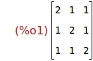
Ejercicio 1.2. Definir la matriz N
[2 0 3]
[4 1 5]
(%i2)
N:matrix([2,0,3],[4,1,5]);
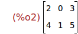
Ejercicio 1.3. Definir la matriz A de orden 3x3 cuyo elemento (i,j) es
(-1)^(i+j)/(i+j)
(%i3) a[i,j]:=(-1)^(i+j)/(i+j) $
(%i4)
A:genmatrix(a,3,3);
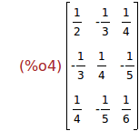
Ejercicio 1.4. Definir la matriz B de orden 2x2.
(%i5)
B:genmatrix(b,2,2);
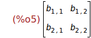
2 Operaciones con matrices
Ejercicio 2.1. Calcular la suma de las matrices M y 2*A
(%i6)
M+2*A ;
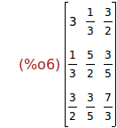
Ejercicio 2.2. Calcular el producto de las matrices M y N.
(%i7)
N.M;
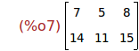
Ejercicio 2.3. Calcular la potencia 5º de la matriz M.
(%i8)
M^^5;
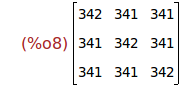
Ejercicio 2.4. Calcular el rango de la matriz N.
(%i9)
rank(N);
Ejercicio 2.5. Calcular el determinante de la matriz A.
(%i10)
determinant(A);
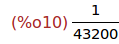
Ejercicio 2.6. Calcular la inversa de la matriz A.
(%i11)
invert(A);
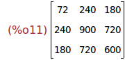
Ejercicio 2.7. Calcular la traspuesta de la matriz N.
(%i12)
transpose(N);
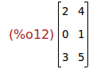
3 Diagonalización de matrices cuadradas
Ejercicio 3.1. Calcular el polinomio característico de la matriz M.
(%i13)
charpoly(M,x);
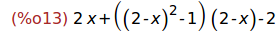
(%i14)
expand(%);
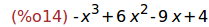
Ejercicio 3.2. Calcular los autovalores de la matriz M.
(%i15)
solve(%=0,x) ;
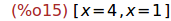
(%i24)
factor(charpoly(M,x));
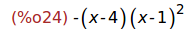
(%i17)
eigenvalues(M);
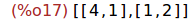
Ejercicio 3.3. Calcular los autovectores de la matriz M.
(%i18)
eigenvectors(M);
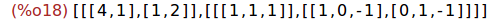
Ejercicio 3.4. Calcular la matriz P que es la matriz de paso de la base cacónica
de R3 a una base de autovectores.
(%i19)
P:transpose( matrix([1,1,1],[1,0,-1],[0,1,-1]) ) ;
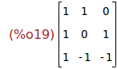
Ejercicio 3.5. Calcular la matriz Q que es la inversa de P
(%i20)
Q:invert(P);
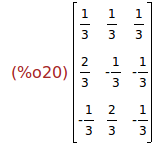
Ejercicio 3.6. Calcular la matriz diagonal D cuyos valores en la diagonal son
los autovalores de M.
(%i21)
D:diag_matrix(4,1,1);
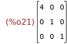
Ejercicio 3.7. Calcular el producto de las matrices P, D y Q.
(%i25)
P.D.Q;
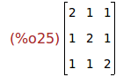
Ejercicio 3.8. Comprobar que el producto de las matrices P, D y Q es igual a la
matriz M.
(%i27)
is(P.D.Q = M);
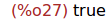
Fin.